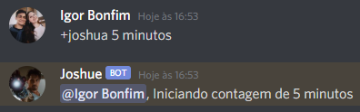

Bot para discord usando a biblioteca Discord.js.
Como surgiu a ideia?
A ideia surgiu entre uma brincadeira entre amigos, onde um de nossos amigos sempre dizia que voltaria em 10 minutos, no entanto sempre acabava atrasando. Sempre ficavamos tentando acertar quanto tempo ele demoraria e contando o tempo de atraso. Por conta disso, surgiu a ideia de criar um bot para o Discord que pudesse contar o tempo de atraso.
Após começar a fazer o bot, tive também a ideia de implementar a funcionalidade de tocar músicas no discord, pois em nosso servidores já utilizavamos um bot que tocava músicas, então fiquei com essa ideia de fazer algo parecido para ver como seria.
Tecnologias utilizadas
Funcionalidades
Comandos
 Após o tempo